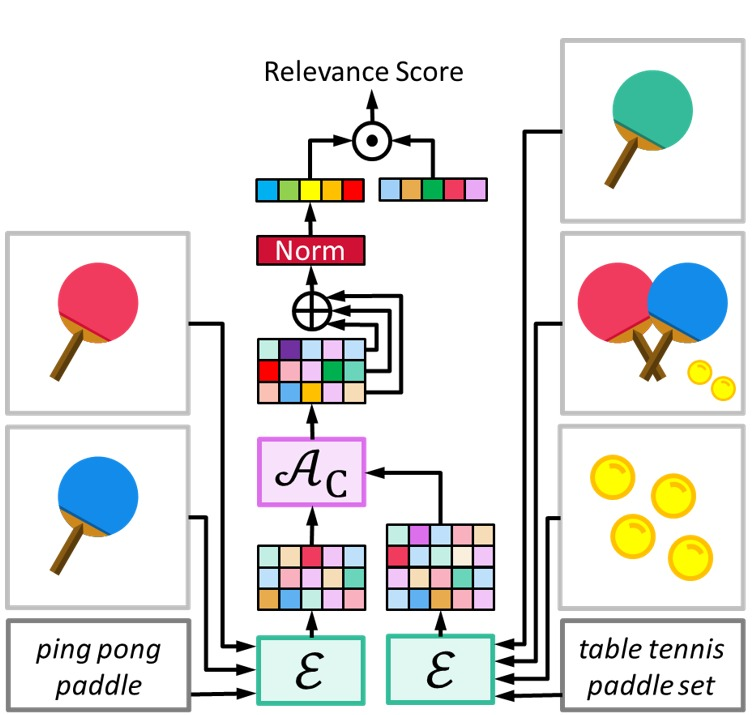
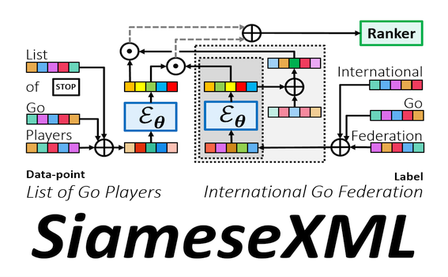
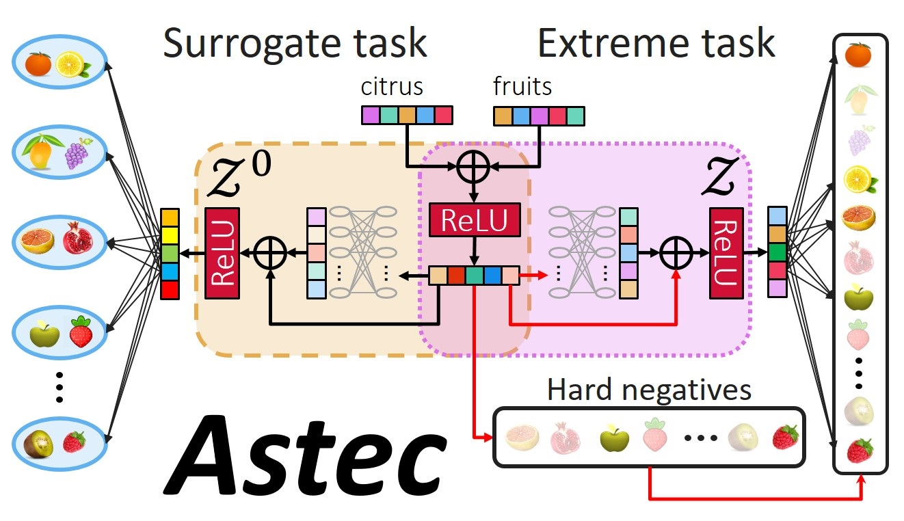
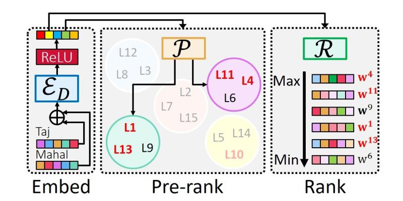
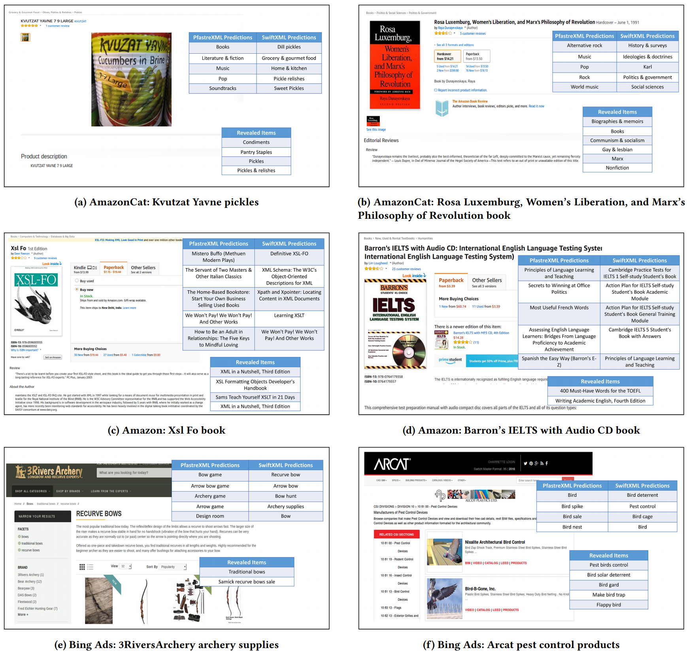
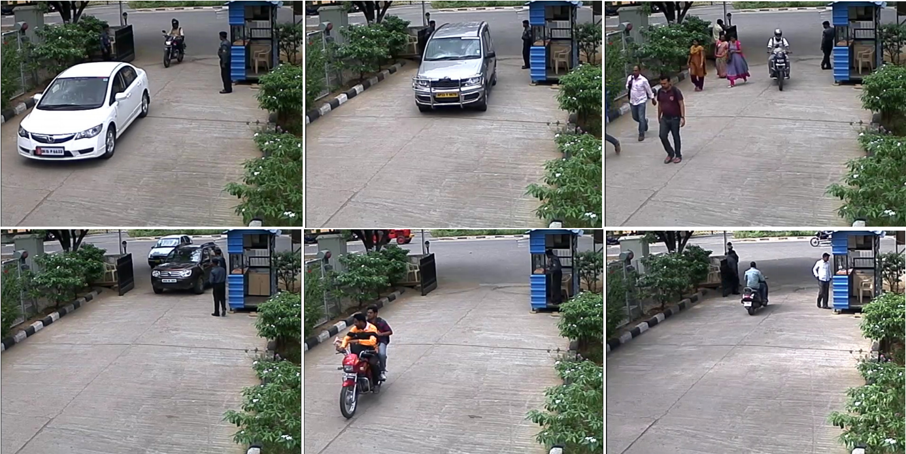

<!DOCTYPE HTML>
<html lang="en"><head><meta http-equiv="Content-Type" content="text/html; charset=UTF-8">
  <script type="text/javascript" src="./hidebib.js.download"></script>
  <title>Kunal Dahiya</title>
  
  <meta name="author" content="Kunal Dahiya">
  <meta name="viewport" content="width=device-width, initial-scale=1">
  
  <link rel="stylesheet" type="text/css" href="stylesheet.css">
  <link rel="icon" type="image/png" href="images/seal_icon.png">
</head>

<body>
  <table width="840" border="0" align="center" cellspacing="0" cellpadding="20">
    <tbody><tr><td>
  
  <p align="center">
    <name>Kunal Dahiya</name><br>
    </p><table width="100%" align="center" border="0" cellspacing="0" cellpadding="20">
    
  
    <tbody><tr>
       <td width="32%" valign="top"><a href="#Bio"></a>
       <p align="center">
        <a href="mailto:kunalsdahiya@gmail.com">Email</a> &nbsp | <a href="https://scholar.google.co.in/citations?user=PAauE4EAAAAJ&hl=en" target="_blank">Scholar</a> | <a href="https://www.linkedin.com/in/kunaldahiya/">linkedin</a> <br> <a href="https://github.com/kunaldahiya" target="_blank">Github</a> 
       </p>
       </td>
       <td width="68%" valign="top" align="justify" id="Bio">

      <p>
        I am a Research Scholar in the School of Information Technology at Indian Institute of Technology Delhi, where I work on extreme multi-label learning. I am working with <a href="http://manikvarma.org/"> Dr. Manik Varma</a> and <a href="https://web.iitd.ac.in/~sumeet/"> Dr. Sumeet Agarwal</a> on deep learning for extreme multi-label classification. I had previously worked with <a href="https://iith.ac.in/~ckm/"> Dr. C Krishna Mohan</a> on scalable visual computing applications as part of my Masters thesis.        
      </p>

      <p>
        Our recent work DeepXML not only provides a uniform framework to analyze and improve existing deep extreme classifiers but it also yielded a family of deep extreme classification algorithms such as Astec, DECAF, GalaXC, ECLARE, MUFIN, and SiameseXML. These algorithms have found applications in various real-world applications including query recommendation and ads where it is benefitting millions of users and small buisnesses.
      </p>
       </td>
    </tr>
  </tbody></table>
  
  <table width="100%" align="center" border="0" cellspacing="0" cellpadding="10">
    <tbody><tr><td id="News">
      <heading>News</heading>
       <ul>
        <li> MUFIN accepted at CVPR 2022.</li>
        <li> Research Intern at MSR India (Sept., 2021 - ).</li>
        <li> SiameseXML accepted at ICML 2021.</li>
        <li> DeepXML and DECAF accepted at WSDM 2021.</li>
       </ul>
    </td></tr>
  </tbody></table>
  
  <table style="width:100%;border:0px;border-spacing:0px;border-collapse:separate;margin-right:auto;margin-left:auto;"><tbody>

  </tbody></table><table width="100%" align="center" border="0" cellspacing="0" cellpadding="10">
    <tbody><tr><td id="ConfPublications"> <heading>Publications</heading></td></tr>
  </tbody></table>

  <table width="100%" align="center" border="0" cellspacing="0" cellpadding="20">
    <tbody><tr>
     <td width="33%" valign="top" align="center"><a href="http://manikvarma.org/pubs/mittal22.pdf" target="_blank"></a>
     </td><td width="67%" valign="top">
        <p><a href="http://manikvarma.org/pubs/mittal22.pdf" target="_blank" id="Mittal22">
        <heading>Multimodal extreme classification</heading></a><br>
        Anshul Mittal, <strong> Kunal Dahiya</strong>, Shreya Malani, Janani Ramaswamy, Seba Kuruvilla, Jitendra Ajmera, Keng-hao Chang, Sumeet Agarwal, Purushottam Kar, and Manik Varma<br>
        Computer Vision and Pattern Recognition Conference (<b>CVPR</b>), 2022<br>
    </p>
        <div class="paper" id="mittal22">
        <a href="javascript:toggleblock(&#39;mittal22abs&#39;)">abstract</a> /
        <a shape="rect" href="javascript:togglebib(&#39;mittal22&#39;)" class="togglebib">bibtex</a> /
        <a href="http://manikvarma.org/pubs/mittal22.pdf" target="_blank">pdf</a> /
        <a href="https://github.com/Extreme-classification/MUFIN" target="_blank">code</a>
        <p align="justify"> <i id="mittal22abs" style="display: none;">This paper develops the MUFIN technique for extreme classification (XC) tasks with millions of labels where data-points and labels are endowed with visual and textual descriptors. Applications of MUFIN to product-to-product recommendation and bid query prediction over several millions of products are presented. Contemporary multi-modal methods frequently rely on purely embedding-based methods. On the other hand, XC methods utilize classifier architectures to offer superior accuracies than embedding-only methods but mostly focus on text-based categorization tasks. MUFIN bridges this gap by reformulating multi-modal categorization as an XC problem with several millions of labels. This presents the twin challenges of developing multi-modal architectures that can offer embeddings sufficiently expressive to allow accurate categorization over millions of labels; and training and inference routines that scale logarithmically in the number of labels. MUFIN develops an architecture based on cross-modal attention and trains it in a modular fashion using pre-training and positive and negative mining. A novel product-to-product recommendation dataset MM-AmazonTitles-300K containing over 300K products was curated from publicly available amazon.com listings with each product endowed with a title and multiple images. On the MM-AmazonTitles-300K and Polyvore datasets, and a dataset with over 4 million labels curated from click logs of the Bing search engine, MUFIN offered at least 3% higher accuracy than leading text-based, image-based and multi-modal techniques.</i></p>
        <p></p><pre xml:space="preserve" style="display: none;">@InProceedings{Mittal22,
          author    = "Mittal, A. and Dahiya, K. and Malani, S. 
                      and Ramaswamy, J. and Kuruvilla, S. 
                      and Ajmera, J. and Chang, K. 
                      and Agrawal, S. and Kar, P. and Varma, M.",
          title     = " Multimodal Extreme Classification",
          booktitle = "Proceedings of the IEEE Conference 
                       on Computer Vision and Pattern Recognition",
          month     = "June",
          year      = "2022"
        }        
</pre>
</div>
</td>
</tr></table>


  <table width="100%" align="center" border="0" cellspacing="0" cellpadding="20">
    <tbody><tr>
     <td width="33%" valign="top" align="center"><a href="http://manikvarma.org/pubs/dahiya21b.pdf" target="_blank"></a>
     </td><td width="67%" valign="top">
        <p><a href="http://manikvarma.org/pubs/dahiya21b.pdf" target="_blank" id="Dahiya21b">
        <heading>SiameseXML: Siamese Networks meet Extreme Classifiers with 100M Labels</heading></a><br>
        <strong> Kunal Dahiya</strong>, Ananye Agarwal, Deepak Saini, Gururaj K, Jian Jiao, Amit Singh, Sumeet Agarwal, Purushottam Kar, and Manik Varma<br>
        Internation conference on Machine Learning (<b>ICML</b>), 2021<br>
    </p>
        <div class="paper" id="dahiya21b">
        <a href="javascript:toggleblock(&#39;dahiya21babs&#39;)">abstract</a> /
        <a shape="rect" href="javascript:togglebib(&#39;dahiya21b&#39;)" class="togglebib">bibtex</a> /
        <a href="http://manikvarma.org/pubs/dahiya21b.pdf" target="_blank">pdf</a> /
        <a href="https://github.com/Extreme-classification/siamesexml" target="_blank">code</a>
        <p align="justify"> <i id="dahiya21babs" style="display: none;">Deep extreme multi-label learning (XML) requires training deep architectures that can tag a data point with its most relevant subset of labels from an extremely large label set. XML applications such as ad and product recommendation involve labels rarely seen during training but which nevertheless hold the key to recommendations that delight users. Effective utilization of label metadata and high quality predictions for rare labels at the scale of millions of labels are thus key challenges in contemporary XML research. To address these, this paper develops the SiameseXML framework based on a novel probabilistic model that naturally motivates a modular approach melding Siamese architectures with high-capacity extreme classifiers, and a training pipeline that effortlessly scales to tasks with 100 million labels. SiameseXML offers predictions 2-13% more accurate than leading XML methods on public benchmark datasets, as well as in live A/B tests on the Bing search engine, it offers significant gains in click-through-rates, coverage, revenue and other online metrics over state-of-the-art techniques currently in production.</i></p>
        <p></p><pre xml:space="preserve" style="display: none;">@InProceedings{Dahiya21b,
          author = "Dahiya, K. and Agarwal, A. and Saini, D. 
                   and Gururaj, K. and Jiao, J. and Singh,
                   A. and Agarwal, S. and Kar, P. and Varma, M.",
          title = "SiameseXML: Siamese Networks meet Extreme
                   Classifiers with 100M Labels",
          booktitle = "Proceedings of the International 
                      Conference on Machine Learning",
          month = "July",
          year = "2021"
      }      
</pre>
</div>
</td>
</tr></table>

  
  <table width="100%" align="center" border="0" cellspacing="0" cellpadding="20">
    <tbody><tr>
     <td width="33%" valign="top" align="center"><a href="http://manikvarma.org/pubs/dahiya21-main.pdf" target="_blank"></a>
     </td><td width="67%" valign="top">
        <p><a href="http://manikvarma.org/pubs/dahiya21-main.pdf" target="_blank" id="Dahiya21">
        <heading>DeepXML: A Deep Extreme Multi-Label Learning Framework Applied to Short Text Documents</heading></a><br>
        <strong> Kunal Dahiya </strong>, Deepak Saini, Anshul Mittal, Ankush Shaw, Kushal Dave, Akshay Soni, Himanshu Jain, Sumeet Agarwal, and Manik Varma<br>
        Internation conference on Web Search and Data Mining (<b>WSDM</b>), 2021<br>
    </p>
        <div class="paper" id="dahiya21">
        <a href="javascript:toggleblock(&#39;dahiya21abs&#39;)">abstract</a> /
        <a shape="rect" href="javascript:togglebib(&#39;dahiya21&#39;)" class="togglebib">bibtex</a> /
        <a href="http://manikvarma.org/pubs/dahiya21-main.pdf" target="_blank">pdf</a> /
        <a href="https://github.com/Extreme-classification/deepxml" target="_blank">code</a>
        <p align="justify"> <i id="dahiya21abs" style="display: none;">Scalability and accuracy are well recognized challenges in deep extreme multi-label learning where the objective is to train architectures for automatically annotating a data point with the most relevant subset of labels from an extremely large label set. This paper develops the DeepXML framework that addresses these challenges by decomposing the deep extreme multi-label task into four simpler sub-tasks each of which can be trained accurately and efficiently. Choosing different components for the four sub-tasks allows DeepXML to generate a family of algorithms with varying trade-offs between accuracy and scalability. In particular, DeepXML yields the Astec algorithm that could be 2-12% more accurate and 5-30× faster to train than leading deep extreme classifiers on publically available short text datasets. Astec could also efficiently train on Bing short text datasets containing up to 62 million labels while making predictions for billions of users and data points per day on commodity hardware. This allowed Astec to be deployed on the Bing search engine for a number of short text applications ranging from matching user queries to advertiser bid phrases to showing personalized ads where it yielded significant gains in click-through-rates, coverage, revenue and other online metrics over state-of-the-art techniques currently in production.</i></p>
        <p></p><pre xml:space="preserve" style="display: none;">@InProceedings{Dahiya21,
    author = "Dahiya, K. and Saini, D. and Mittal, A. and 
              Shaw, A. and Dave, K. and Soni, A. and Jain,
              H. and Agarwal, S. and Varma, M.",
    title = "DeepXML: A Deep Extreme Multi-Label Learning
             Framework Applied to Short Text Documents",
    booktitle = "Proceedings of the ACM International
            Conference on Web Search and Data Mining",
    month = "March",
    year = "2021"
}
</pre>
</div>
</td>
</tr></table>


<table width="100%" align="center" border="0" cellspacing="0" cellpadding="20">
  <tbody><tr>
   <td width="33%" valign="top" align="center"><a href="http://manikvarma.org/pubs/mittal21-main.pdf" target="_blank"></a>
   </td><td width="67%" valign="top">
      <p><a href="http://manikvarma.org/pubs/mittal21-main.pdf" target="_blank" id="Mittal21">
      <heading>DECAF: Deep Extreme Classification with Label Features</heading></a><br>
      Anshul Mittal, <strong> Kunal Dahiya</strong>, Sheshansh Agrawal, Deepak Saini, Sumeet Agarwal, Purushottam Kar, and Manik Varma<br>
      Internation conference on Web Search and Data Mining (<b>WSDM</b>), 2021<br>
  </p>
      <div class="paper" id="mittal21">
      <a href="javascript:toggleblock(&#39;mittal21abs&#39;)">abstract</a> /
      <a shape="rect" href="javascript:togglebib(&#39;mittal21&#39;)" class="togglebib">bibtex</a> /
      <a href="http://manikvarma.org/pubs/mittal21-main.pdf" target="_blank">pdf</a> /
      <a href="https://github.com/Extreme-classification/DECAF" target="_blank">code</a>
      <p align="justify"> <i id="mittal21abs" style="display: none;">Extreme multi-label classification (XML) involves tagging a data point with its most relevant subset of labels from an extremely large label set, with several applications such as product-to-product recommendation with millions of products. Although leading XML algorithms scale to millions of labels, they largely ignore label metadata such as textual descriptions of the labels. On the other hand, classical techniques that can utilize label metadata via representation learning using deep networks struggle in extreme settings. This paper develops the DECAF algorithm that addresses these challenges by learning models enriched by label metadata that jointly learn model parameters and feature representations using deep networks and offer accurate classification at the scale of millions of labels. DECAF makes specific contributions to model architecture design, initialization, and training, enabling it to offer up to 2-6% more accurate prediction than leading extreme classifiers on publicly available benchmark product-to-product recommendation datasets, such as LF-AmazonTitles-1.3M. At the same time, DECAF was found to be up to 22× faster at inference than leading deep extreme classifiers, which makes it suitable for real-time applications that require predictions within a few milliseconds.</i></p>
      <p></p><pre xml:space="preserve" style="display: none;">@InProceedings{Mittal21,
  author = "Mittal, A. and Dahiya, K. and Agrawal, S. 
          and Saini, D. and Agarwal, S. and Kar, P. and Varma, M.",
  title = "DECAF: Deep Extreme Classification with Label Features",
  booktitle = "Proceedings of the ACM International 
          Conference on Web Search and Data Mining",
  month = "March",
  year = "2021",
  }
</pre>
</div>
</td>
</tr></table>

  <table width="100%" align="center" border="0" cellspacing="0" cellpadding="20">
    <tbody><tr>
     <td width="33%" valign="top" align="center"><a href="http://manikvarma.org/pubs/prabhu18.pdf" target="_blank"></a>
     </td><td width="67%" valign="top">
        <p><a href="http://manikvarma.org/pubs/prabhu18.pdf" target="_blank" id="Prabhu18">
        <heading>Extreme multi-label learning with label features for warm-start tagging, ranking and recommendation</heading></a><br>
        Yashoteja Prabhu, Anil Kag, Shilpa Gopinath, <strong> Kunal Dahiya </strong>, Shrutendra Harsola, Rahul Agrawal and Manik Varma<br>
        Internation conference on Web Search and Data Mining (<b>WSDM</b>), 2018<br>
    </p>
        <div class="paper" id="prabhu18">
        <a href="javascript:toggleblock(&#39;prabhu18abs&#39;)">abstract</a> /
        <a shape="rect" href="javascript:togglebib(&#39;prabhu18&#39;)" class="togglebib">bibtex</a> /
        <a href="http://manikvarma.org/pubs/prabhu18.pdf" target="_blank">pdf</a> /
        <a href="http://manikvarma.org/code/SwiftXML/download.html" target="_blank">code</a>
        <p align="justify"> <i id="prabhu18abs" style="display: none;">The objective in extreme multi-label learning is to build classifiers that can annotate a data point with the subset of relevant labels from an extremely large label set. Extreme classification has, thus far, only been studied in the context of predicting labels for novel test points. This paper formulates the extreme classification problem when predictions need to be made on training points with partially revealed labels. This allows the reformulation of warm-start tagging, ranking and recommendation problems as extreme multi-label learning with each item to be ranked/recommended being mapped onto a separate label. The SwiftXML algorithm is developed to tackle such warm-start applications by leveraging label features. SwiftXML improves upon the state-of-the-art tree based extreme classifiers by partitioning tree nodes using two hyperplanes learnt jointly in the label and data point feature spaces. Optimization is carried out via an alternating minimization algorithm allowing SwiftXML to efficiently scale to large problems. Experiments on multiple benchmark tasks, including tagging on Wikipedia and item-to-item recommendation on Amazon, reveal that SwiftXML's predictions can be up to 14 % more accurate as compared to leading extreme classifiers. SwiftXML also demonstrates the benefits of reformulating warm-start recommendation problems as extreme multi-label learning tasks by scaling beyond classical recommender systems and achieving prediction accuracy gains of up to 37 %. Furthermore, in a live deployment for sponsored search on Bing, it was observed that SwiftXML could increase the relative click-through-rate by 10 % while simultaneously reducing the bounce rate by 30%.</i></p>
        <p></p><pre xml:space="preserve" style="display: none;">@InProceedings{Prabhu18,
          author    = "Prabhu, Y. and Kag, A. and Gopinath, S. 
                      and Dahiya, K. and Harsola, S. and 
                      Agrawal, R. and Varma, M.",
          title     = "Extreme multi-label learning with label 
                      features for warm-start tagging, ranking
                      and recommendation",
          booktitle = "Proceedings of the ACM International
                      Conference on Web Search and Data Mining",
          month     = "February",
          year      = "2018",
        }
      </pre>
    </div>
    </td>
    </tr></table>
    
    <table width="100%" align="center" border="0" cellspacing="0" cellpadding="20">
      <tbody><tr>
       <td width="33%" valign="top" align="center"><a href="./data/dahiya16.pdf" target="_blank"></a>
       </td><td width="67%" valign="top">
          <p><a href="./data/dahiya16.pdf" target="_blank" id="Dahiya16">
          <heading>Automatic Detection of Bike-riders without Helmet using Surveillance Videos in Real-time</heading></a><br>
          <strong> Kunal Dahiya </strong>, Dinesh Singh, and C. Krishna Mohan<br>
          International Joint Conference on Neural Networks (<b>IJCNN</b>), 2016<br>
      </p>
          <div class="paper" id="dahiya16">
          <a href="javascript:toggleblock(&#39;dahiya16abs&#39;)">abstract</a> /
          <a shape="rect" href="javascript:togglebib(&#39;dahiya16&#39;)" class="togglebib">bibtex</a> /
          <a href="./data/dahiya16.pdf" target="_blank">pdf</a> /
          <a href="#" target="_blank">code</a>
          <p align="justify"> <i id="dahiya16abs" style="display: none;">In this paper, we propose an approach for automatic detection of bike-riders without helmet using surveillance videos in real time. The proposed approach first detects bike riders from surveillance video using background subtraction and object segmentation. Then it determines whether bike-rider is using a helmet or not using visual features and binary classifier. Also, we present a consolidation approach for violation reporting which helps in improving reliability of the proposed approach. In order to evaluate our approach, we have provided a performance comparison of three widely used feature representations namely histogram of oriented gradients (HOG), scale-invariant feature transform (SIFT), and local binary patterns (LBP) for classification. The experimental results show detection accuracy of 93.80% on the real world surveillance data. It has also been shown that proposed approach is computationally less expensive and performs in real-time with a processing time of 11.58 ms per frame.</i></p>
          <p></p><pre xml:space="preserve" style="display: none;">@InProceedings{Dahiya16,
            author    = "Dahiya, K. and Singh, D. and
                         Mohan, C. K.,
            title     = "Automatic Detection of Bike-riders
                         without Helmet using Surveillance
                         Videos in Real-time",
            booktitle = "Proceedings of the IEEE International 
                        Joint Conference on Neural Networks",
            month     = "July",
            year      = "2016",
          }
        </pre>
      </div>
      </td>
      </tr></table>  

      <table width="100%" align="center" border="0" cellspacing="0" cellpadding="20"><tbody>
        <tr>
          <td>
            <heading>Software/Datasets</heading>
            <ul>
              <li> <a href= https://github.com/kunaldahiya/pyxclib> PyXClib: Tools for extreme multi-label classification problems</a></li>
              <li> <a href= http://manikvarma.org/downloads/XC/XMLRepository.html> The Extreme Classification Repository: Multi-label Datasets & Code</a>.</li>
              </ul>
          </td>
        </tr>
      </tbody></table>

        <table width="100%" align="center" border="0" cellspacing="0" cellpadding="20"><tbody>
          <tr>
            <td>
              <heading>Others</heading>
              <ul>
                <li> Reviewer for TPAMI.</li>
                <li> Best TA award for COL341 and COL100 at IIT Delhi.</li>
                </ul>
            </td>
          </tr>
        </tbody></table>

      <table width="100%" align="center" border="0" cellspacing="0" cellpadding="20">
          <tbody><tr><td><br><p align="right"><font size="2">
          Source: <a href="https://jonbarron.info/">this</a> and <a href="https://homes.cs.washington.edu/~kusupati/">this</a>. Thanks for the template.
          </font></p></td></tr>
     </tbody></table>
     
</body>
</html>
